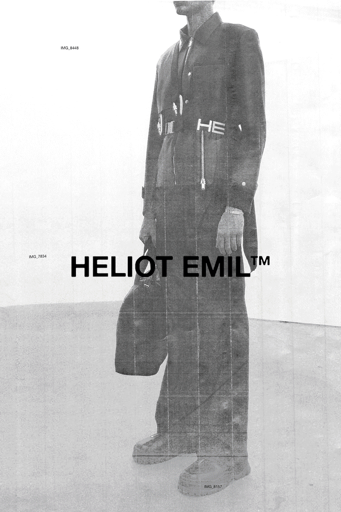
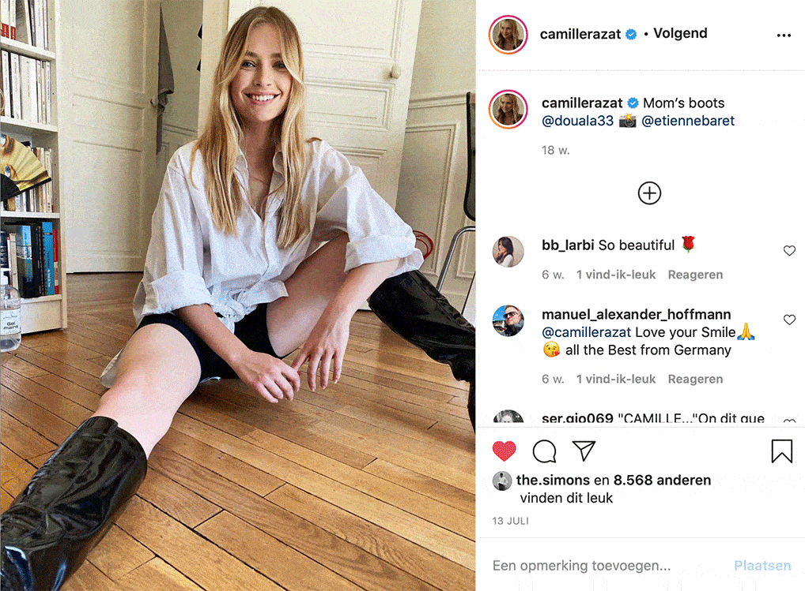

Nino Furcage is a multidisciplinary artist and creative
director for the Scandinavian label HELIOT EMIL .
He lives together with his wife, CAMILLE RAZAT , In
an industrial loft in the heart of Copenhagen. They
frequently work together for the label as Camille
is a model.
His autonomous artistic practice, which he focusses on
besides the label, conveys an obscure and somewhere
enriching minimalistic universe. Furcage's work is a
symbiosis between a conceptual and spontaneous
approach to visual construction, with the influence
of the Japanese wabi sabi aesthetic. It plays with
the notions of fluidity, flora and decay.